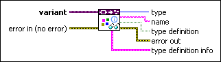
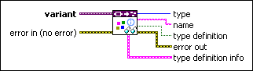

Get Type Information VI
Owning Palette: Data Type Parsing VIs
Requires: Base Development System
Retrieves data type information from the data type stored in variant.

 Add to the block diagram Add to the block diagram |
 Find on the palette Find on the palette |
Owning Palette: Data Type Parsing VIs
Requires: Base Development System
Retrieves data type information from the data type stored in variant.

| Add to the block diagram |
Find on the palette |
| variant specifies the variant data from which you want to retrieve data type information. | |||||
 |
error in describes error conditions that occur before this node runs. This input provides standard error in functionality. | ||||
 |
type returns the data type stored in variant. | ||||
 |
name returns the name of the data type stored in variant. | ||||
 |
type definition returns TRUE when the data type stored in variant is an instance of a type definition.
|
||||
 |
error out contains error information. This output provides standard error out functionality. | ||||
|
type definition info returns the type definition information only if type definition is TRUE.
|